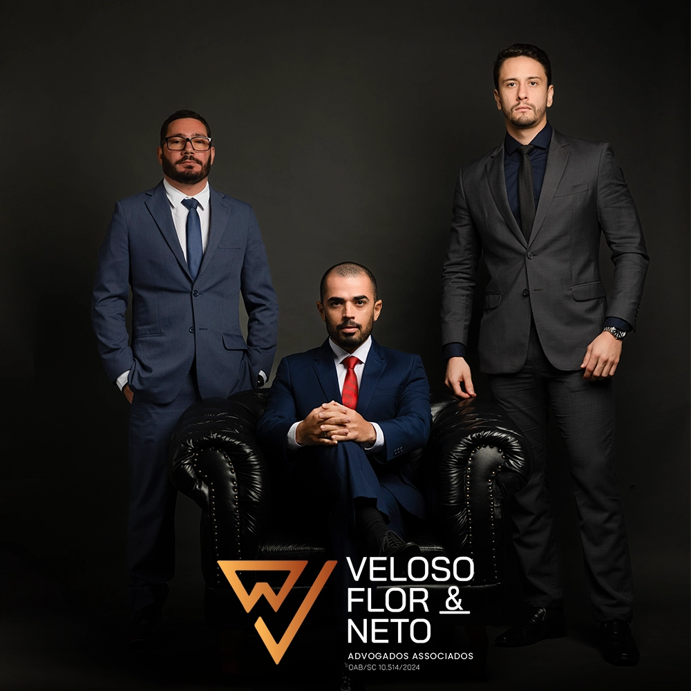
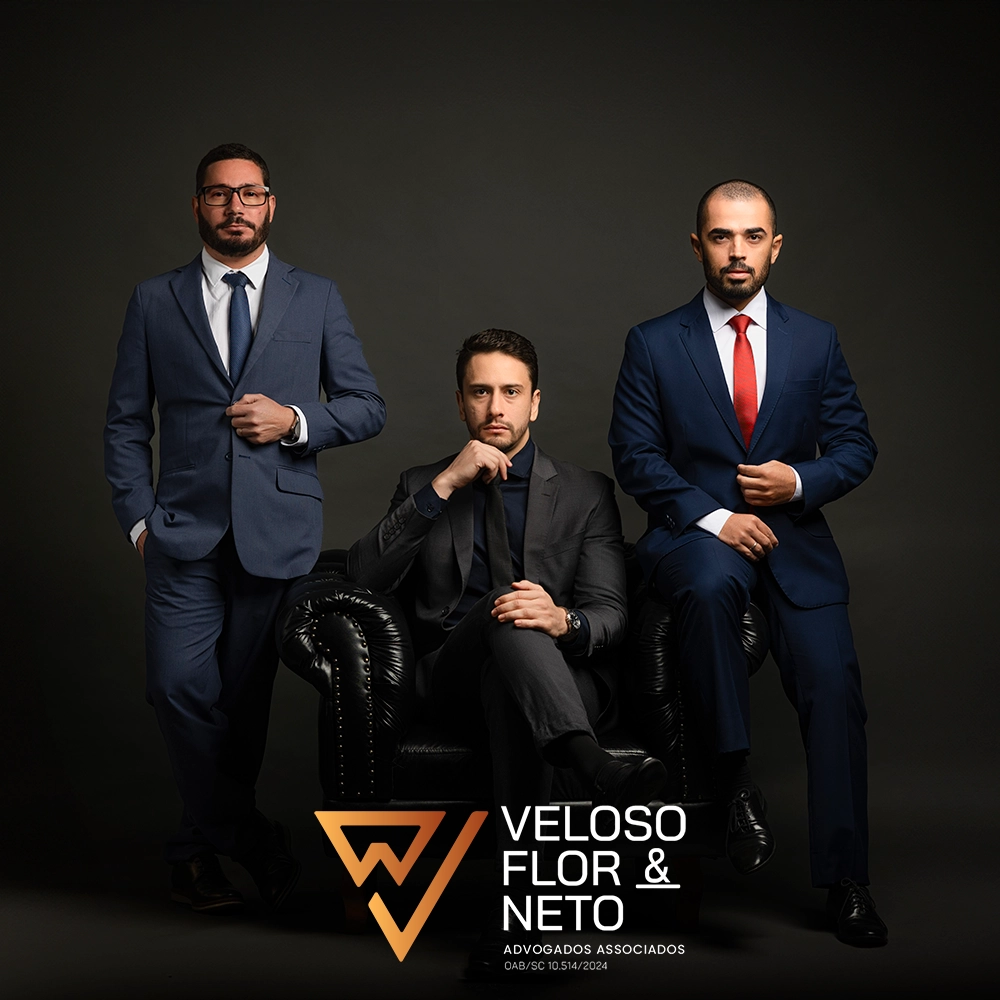

Protegendo seus direitos patrimoniais e emocionais com a máxima discrição, excelência técnica e foco em soluções consensuais e eficientes.

Operamos através de uma Unidade Especializada em Direito de Família e Sucessões, focando em soluções ágeis, estratégicas e seguras.
Condução ágil de divórcios consensuais diretamente em cartório (extrajudicial) para reduzir o desgaste emocional, bem como atuação firme na esfera judicial contenciosa.
Procedimentos para declarar a união e formalizar a separação de companheiros em cartório ou judicialmente, assegurando a correta divisão de direitos.
Estruturação técnica de acordos de guarda compartilhada e de convivência familiar, priorizando o bem-estar psicológico e social dos filhos menores.
Processos de fixação, revisão (aumento ou redução), exoneração e execução ágil de pensão alimentícia para garantir o suporte necessário a quem tem direito.
Regularização rápida de heranças por meio de inventário extrajudicial em cartório ou judicial, minimizando custos tributários e potenciais litígios.
Divisão justa de patrimônio complexo (imóveis, investimentos e empresas), visando proteger os bens construídos e garantir segurança financeira.

O escritório Veloso & Neto Advogados nasceu com o propósito de oferecer uma advocacia de qualidade para as pessoas. Localizados em Navegantes/SC, atendemos clientes em todo o Brasil, presencialmente em nossa Sede ou virtualmente, utilizando tecnologia de ponta para garantir que a distância nunca seja um obstáculo para a justiça.
Diferente de escritórios generalistas, nós operamos através de uma Unidade Especializada em Direito de Família. Entendemos que um divórcio não é apenas um processo burocrático, mas uma transição de vida que exige estratégia para proteger seu patrimônio e garantir o bem-estar dos seus filhos.

Lidera a estratégia comercial e o planejamento de cada caso com foco em viabilidade econômica, dando clareza absoluta sobre os direitos do cliente desde o início.

Especialista em processos de alta complexidade. Atua com extremo rigor técnico e precisão para garantir que audiências e petições tenham a máxima segurança jurídica.

Advogado Associado dedicado exclusivamente à área de família, apoiado pelo suporte operacional ágil de Marina e João, garantindo controle de prazos e informação ativa ao cliente.
Acumulamos anos de experiência lidando com as dores e os desafios de quem busca a dissolução do matrimônio. Somos especialistas em estruturar:
Acreditamos que uma separação deve ser o fim de um ciclo e o início de uma vida organizada. Nossa experiência nos mostrou que a melhor advocacia de família é aquela que antecipa problemas e entrega a **paz de espírito** que o cliente precisa para recomeçar.
Falar com um EspecialistaDivórcio não é só assinar um papel, é decidir como você vai viver daqui para frente. Enquanto muitos focam só na briga, a gente foca em proteger o que você lutou para construir. Garantimos que a divisão de bens seja justa e que você não perca o que é seu por direito.
Tem advogado que faz de tudo: de batida de carro a vizinho barulhento. Nós não. Nosso time é dedicado exclusivamente a causas de família. Isso nos permite conhecer os caminhos mais curtos, rápidos e as decisões mais recentes dos juízes, garantindo máxima segurança.
A maior reclamação que ouvimos é de profissional que recebe e some. No Veloso & Neto, a conversa é clara. Somos organizados para manter você informado sobre cada passo, falando a sua língua de forma simples, sem juridiquês difícil. Você sabe o que ocorre do início ao fim.
Converse diretamente com o Dr. Veloso. Analisaremos o seu caso de forma personalizada e segura via WhatsApp.
Chamar no WhatsApp CorporativoO divórcio em cartório é uma alternativa rápida e desburocratizada ao processo judicial. Para que ocorra, são necessários três requisitos obrigatórios: consenso absoluto sobre a divisão de bens, inexistência de filhos menores de idade ou incapazes (e a esposa não estar grávida) e a presença obrigatória de um advogado de confiança assistindo o casal.
Ao contrário do mito popular, não existe um percentual fixo de "30% do salário". A pensão alimentícia é calculada com base no trinômio: **Necessidade** de quem recebe (alimentado), **Possibilidade** financeira de quem paga (alimentante) e **Proporcionalidade** na divisão dos custos entre pai e mãe. Cada caso é analisado detalhadamente pelo juiz com base nas provas trazidas.
Não. A guarda compartilhada refere-se à divisão conjunta das **responsabilidades e decisões** sobre a vida do filho (escolha de escola, tratamentos de saúde, viagens). A residência física do menor normalmente é fixada na casa de um dos pais (lar de referência), enquanto o outro possui um regime de convivência estruturado. A alternância de residência caracteriza a "guarda alternada", que é pouco recomendada pelos tribunais por quebrar a rotina da criança.
De acordo com o Código de Processo Civil, o inventário deve ser instaurado no prazo de até **2 meses** (60 dias) a contar da data de abertura da sucessão (falecimento). Caso o processo não seja iniciado dentro desse período, poderá haver cobrança de multa sobre o ITCMD (Imposto sobre Transmissão Causa Mortis e Doação), cujo percentual varia conforme as regras de cada estado.
Sim. Através do **Planejamento Sucessório**, é possível estruturar a divisão do patrimônio em vida utilizando ferramentas como doações com reserva de usufruto, testamentos, constituição de holdings familiares ou previdência privada. Isso evita disputas judiciais desgastantes e caras entre herdeiros no futuro, além de proporcionar uma expressiva economia tributária.
Olá! Sou o Dr. Veloso. Como posso ajudar você e sua família hoje? Clique abaixo para iniciarmos seu atendimento de forma segura.
13:45